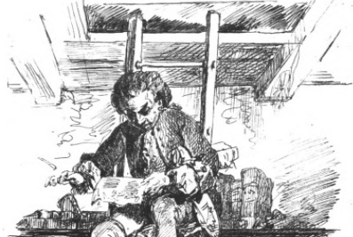
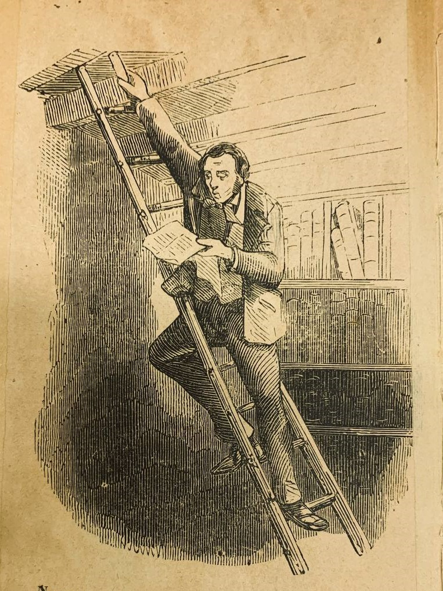

La codifica è stata svolta seguendo il markup language XML, secondo le linee guida del Consorzio
TEI. Non volendo presentare un'edizione critica, ma una piattaforma che restituisse le varie redazioni note,
la codifica è stata effettuata separatamente, ogni testimone costituisce un file XML a sé stante. Per la
realizzazione della sezione TESTO, si he deciso di utilizzare xi:include, recuperando quindi i dati
dai vari file XML e riunendole in un unico documento. Questo è stato sottoposto ad un singolo foglio di
trasformazione XSLT, per la creazione della pagina HTML, stilizzata con un foglio CSS e che si basa sulle funzioni
esplicitate in JavaScript.
L’uso delle parentetiche risulta piuttosto regolare; per questo motivo si è scelto di integrare le parentesi di
chiusura mancanti, codificando l’intervento attraverso l’elemento <supplied> e attributo
@reason=“omitted-in-original” (senza contare les employes che appartengono a tutti e sette >
(senza contare les employes che appartengono a tutti e sette
<supplied reason=“omitted-in-original”>)</supplied>).
Gli interventi riguardanti accenti, apostrofi ed elisioni sono stati opportunamente segnati in sede di codifica
tramite l’elemento <w> e l’attributo @orig, nel quale è stata indicata la forma
effettivamente riscontrata nel manoscritto (<w orig=perche>perché</w>). Analogamente,
sono stati reintegrati tutti gli apostrofi omessi in presenza dell’indeterminativo femminile davanti a vocale (un
altra donna > un’altra donna etc.).
Rare e non sempre riconducibili a Nievo le lezioni sottolineate nel manoscritto: in tale contesto, la codifica
TEI XML ha permesso di unire all’usuale resa grafica del corsivo (tramite l’elemento
<hi> e l’attributo @rend con valore “italic”) anche l’indicazione
della mano responsabile della sottolineatura (tramite l’attributo @resp, con valori disponibili
“#Ippolito-Nievo” e “#archivista”).
Le variabili fonetiche riscontrabili nei manoscritti del Barone di Nicastro, particolarmente evidenti in relazione all’uso delle consonanti scempie e geminate per l’azione combinata di influsso dialettale e ipercorrettismo, sono state tutte conservate.
L’uso combinato degli elementi <choice>, <abbr> (che codifica
l’abbreviazione a testo) e <expan> (che contiene il relativo scioglimento) vengono utilizzati
per le abbreviazioni che sono state sciolte.
Anche per quanto riguarda le parole o le lettere illeggibili, solitamente indicate con asterischi fra parentesi
quadre, si è scelto di ricorrere agli strumenti offerti dal vocabolario della TEI: le parole che non si sono
potute decifrare sono state codificate attraverso l’elemento <gap> e gli attributi congiunti
@reason (con valore “illegible”), @unit (con valore “char”, carattere
tipografico) e @unit (il cui valore è determinato dal numero delle lettere conteggiabili); per le
lacune dovute alla cattiva conservazione dei manoscritti si è invece fatto ricorso all’attributo
<damage> unito agli attributi @type, @agent,
@extent/@quantity per indicare la tipologia di danneggiamento, la causa (ad esempio
acqua, bruciature, tagli di carta, cera lacca) e l’estensione (in lettere conteggiabili, tramite l’attributo
@extent, o in millimetri, tramite @quantity).